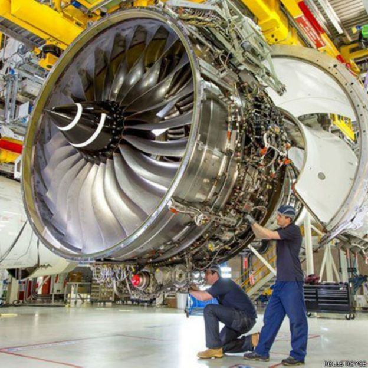
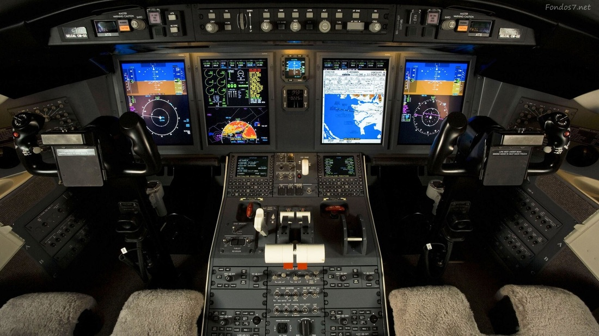
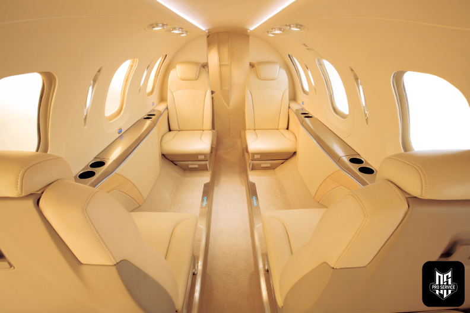
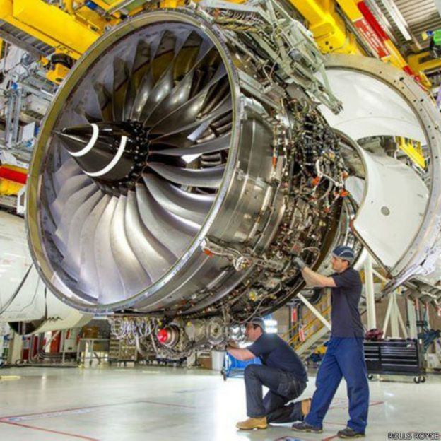
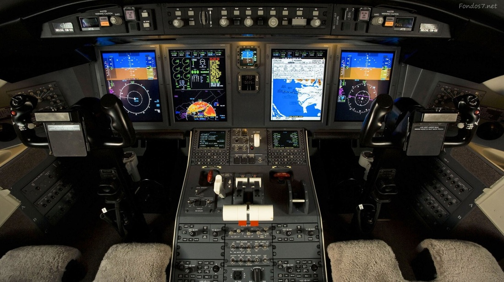
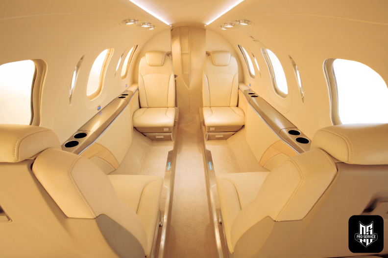

¿Quiénes somos en flightcenter Servicios?
Flightcenter Servicios, C.A., es una compañía fundada en el año 2016 que brinda soporte a la aviación ejecutiva, especializada en soporte técnico, mantenimiento y repuestos. Ofrecemos los servicios necesarios para operar y mantener una aeronave ejecutiva, realizamos la mayoría de los servicios en nuestros propios hangares ubicados en el Aeropuerto de Caracas “Oscar Machado Zuloaga”. Somos una marca 100% venezolana, que con talento propio esperamos lograr convertirnos en un punto de referencia en Venezuela. Siendo una marca asociada con calidad y servicios exclusivos. Somos una empresa en crecimiento con un equipo de trabajo altamente calificado y entrenado continuamente con el fin de garantizar los niveles más altos de calidad en nuestros servicios.
Instalaciones de flightcenter servicios C.A.
Taller aeronáutica
Ingenieria
Misión y visión
“flighcenter Servicios C.A., esta orientada a dar a nuestros clientes y la sociedad aeronáutica en general el mejor servicio que desarrolle una relación a largo plazo con un personal comprometido a la excelencia”.
“Consolidarnos como una empresa líder en el mercado nacional e internacional, con el personal más calificado de la industria para garantizar los niveles más altos de calidad y servicio en el mercado.”
Con el apoyo de nuestro taller ubicado en el Aeropuerto de Caracas “Oscar Machado Zuloaga”, y certificado por el Instituto Nacional de Aeronáutica Civil (INAC) así como también) ofrecemos revisiones periódicas y preventivas de su aeronave para aumentar la vida útil y disminuir los costos de reparación logrando prevenir incidencias antes de que ocurran. Nos especializamos tanto en pequeñas como grandes inspecciones, tanto en estructura, aviónica, entre otros componentes.

Taller de Turbina

Taller de Aviónica e Instrumento

Taller de Pintura

Taller Tapicería y Carpintería

Taller de Turbina

Taller de Aviónica e Instrumento
Taller de Pintura
